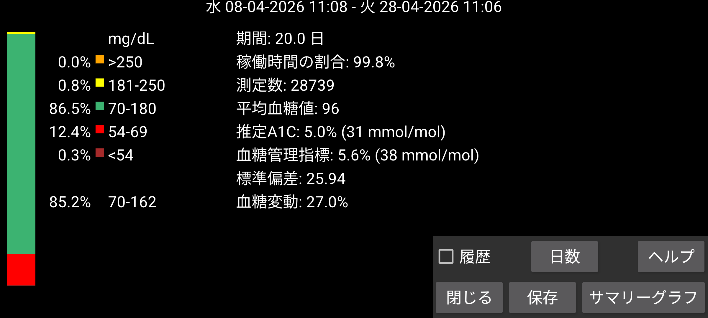
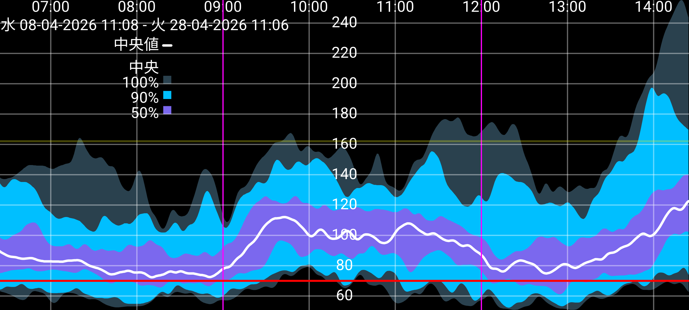

ar be de es fr hi it ja ko nl pl pt ru tr uk uz zh en
AGP から取られた、若干の修正を加えたいくつかの統計です。
分析する日数は 日数 ボタンを押して変更できます。期間は画面終了位置の時刻で終わり、指定された日数分過去にさかのぼります。すべてのデータは、センサーから Bluetooth 経由で毎分受信される血糖値(Juggluco では ストリーム と呼びます)のみに基づいています。
画面の左側には、特定の血糖範囲に入る測定の割合が表示されます。標準範囲は常に表示されます。左メニュー → 設定 → 表示で非標準の目標範囲が指定されている場合、その目標範囲内の時間が標準範囲の下に表示されます。
Juggluco がセンサーから血糖値を受信した時間の割合。
平均血糖値から HbA1c を古い式で推定します(Nathan ら (2008))。計算機は https://professional.diabetes.org/diapro/glucose_calc を参照してください。
Abbott の Libre 2 アプリに表示される値を探している方のためにここに表示しています。GMI はこの指標の 2018 年の代替です。
一般的に使用される特定の式で平均血糖値から計算されます(https://www.jaeb.org/gmi/ 参照)。HbA1c (A1c とも呼ばれる) の経験的に決定された予測で、パーセンテージと mmol/mol で示されます。 私個人としては推定 A1C の方が GMI より良い予測値ですが、Abbott の Libre 3 アプリでは GMI が使われています。
変動係数 %CV=(SD/平均)*100% を血糖変動の指標として使用します。変動係数が大きいほど、血糖値が平均から離れていることを意味します。
指定した日数の血糖値のレポートを表示します。統計、概要グラフ、個別の日の画像が含まれます。これを PDF に印刷して医療従事者にメールできます。左メニュー → 設定 → データ交換 → Web サーバーを有効化する必要があります。Web ブラウザで http://127.0.0.1:17580/x/report を開きます。
(少なくとも 9 日分のストリーム血糖値が利用可能な場合のみ表示されます。)
この期間のすべてのストリーム血糖値を取って、1 日のすべての分について血糖値の分布を示す合成グラフを描画します。黒または白の中央線は、1 日の各分で血糖値の 50% がそれより下にある血糖値を示します。最も明るい青はすべての値が含まれる領域です。やや暗い青は中央値の周りの 90% の値が含まれる領域です。最も暗い青は中央値の周りの 50% の値が含まれる領域です。領域の境界を線として見ると、次のように描けます: 最下線の下に 0% の値、次の最下線(最も明るい青と中間の暗い青の間)の下に 5% の値、3 本目の線(最も暗い青と中間の暗い青の間)の下に 25% の値、黒い線の下に 50% の値。続いて 75%、95%、100%。
美的な理由から曲線は二項フィルターで平滑化されています。
画面をタップすると概要グラフを閉じますが、左または右の境界をタップするとグラフは 1 日分後ろまたは前に動きます。曲線はスクロールでも前後に動かせます。時間スケールは 2 本指を寄せたり離したりして変更できます。